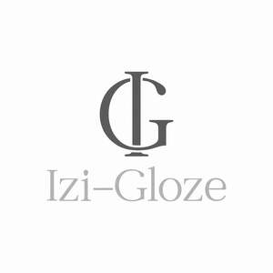

Trade Mark Journal No.2025/049 5 December 2025
UK00004298284 20 November 2025 (3,35,44)

- Class 3
- Skincare cosmetics; Cosmetics; Moisturisers [cosmetics]; Anti-aging moisturizers used as cosmetics; Skin moisturizers used as cosmetics; Suncare lotions [for cosmetic use]; Facial creams [cosmetics]; Anti-aging skincare preparations; Cosmetic moisturisers; After-sun oils [cosmetics]; Skin fresheners [cosmetics]; Beauty care cosmetics; Cosmetics and cosmetic preparations; Self-tanning preparations [cosmetics]; Cosmetic products in the form of aerosols for skincare; Skin care cosmetics; Hair cosmetics; Skin masks [cosmetics]; Organic cosmetics; Tanning oils [cosmetics]; Cosmetics for suntanning; Anti-aging creams [for cosmetic use]; Anti-ageing creams [for cosmetic use]; Body creams [cosmetics]; Moisturising skin lotions [cosmetic]; Non-medicated cosmetics; Skin cleansers [cosmetic]; Skin recovery creams [cosmetics]; Cosmetics in the form of lotions; Natural cosmetics; Beauty lotions; Skin care lotions [cosmetic]; Tanning gels [cosmetics]; Nail cosmetics; Suntan lotion [cosmetics]; Sunscreen creams [for cosmetic use]; Skincare preparations; Facial moisturisers [cosmetic]; Acne cleansers, cosmetic; After-sun lotions [for cosmetic use]; Lip cosmetics; Cosmetic creams and lotions; Tanning preparations [cosmetics]; Sunscreens [for cosmetic use]; After-sun milks [cosmetics]; Cosmetics for eye-lashes; Body and facial creams [cosmetics]; Facial gels [cosmetics]; Cosmetic hair lotions; Make-up palettes containing cosmetics; Skin balms [cosmetic]; After-sun milk [cosmetics]; Tanning milks [cosmetics]; Facial lotions [cosmetic]; Hair care lotions [for cosmetic use]; Skin creams [for cosmetic use]; Suntan oils [cosmetics]; Cosmetic creams for the skin; Skin creams [cosmetic]; Suncare lotions; Moisturising skin creams [cosmetic]; Cosmetic facial lotions; Mousses [cosmetics]; Eyebrow cosmetics; Sunscreen [for cosmetic use]; Fluid creams [cosmetics]; Cosmetics preparations; Cosmetics for use on the skin; Colour cosmetics for the skin; Anti-ageing serums for cosmetic purposes; Anti-wrinkle creams [for cosmetic use]; Night creams [cosmetics]; Cosmetic creams for skin care; Skin care creams [cosmetic]; Milks [cosmetics]; Non-medicated cosmetics and toiletry preparations; Creams (Cosmetic -); Cosmetic creams; Cosmetics in the form of creams; Emollient preparations [cosmetics]; Beauty serums; Anti-aging moisturizers; Facial cleansers [cosmetic]; Cosmetic nourishing creams; Multifunctional cosmetics; Cleansing creams [cosmetic]; Colour cosmetics; Cosmetic products for the shower; Suntanning oil [cosmetics]; Hair care creams [for cosmetic use]; Humectant preparations [cosmetics]; Cosmetic skin fresheners; Body care cosmetics; Cosmetics for eye-brows; Sun-tanning preparations [cosmetics]; Cosmetic suntan lotions; Sun care lotions [for cosmetic use]; Cosmetic soaps; Skin care oils [cosmetic]; Sun protecting creams [cosmetics]; Eye cosmetics; Facial creams [cosmetic]; Facial creams [for cosmetic use]; Bath powder [cosmetics]; Cosmetic massage creams; Sun blocking lipsticks [cosmetics]; Self-tanning preparations [cosmetic]; Cosmetics for use in the treatment of wrinkled skin; Non-medicated skincare preparations; Beauty serums with anti-ageing properties; Cosmetic sunscreen preparations; Skin toners [cosmetic]; Anti-aging serum for cosmetic use; Skin whitening preparations [cosmetic]; Beauty creams; Cosmetic products in the form of aerosols for skin care; Cosmetics for animals; Body and facial gels [cosmetics]; Cosmetics for the treatment of dry skin; Cosmetics for the use on the hair.
- Class 35
- Marketing research in the fields of cosmetics, perfumery and beauty products.
- Class 44
- Cosmetic make-up services.
Gloria Iziren